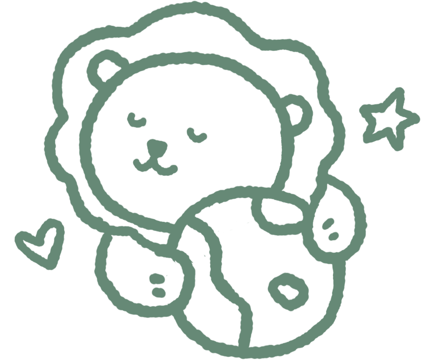

關於本站：天空之城 3D 浮島開發日誌
這是一個由清大福智青年社推廣「2026 蔬食月・出一張嘴改變世界」的社團專題互動專案，非清華大學官方系統。所有推薦店家均來自公開資訊、社團實地走訪與學生口碑推薦，無任何商業置入或營利行為。
四大核心技術架構（效能與美學平衡）
-
1. 純程式積木幾何建模（Zero External 3D Models）：
全場 11 座浮島、清華簡冊立柱、10 間店鋪與招牌料理（藥膳麵、漸層水果奶茶、紅燒素排、紅油抄手、素油飯），100% 由程式碼圓角方塊（RoundedBoxGeometry）、圓柱、球體等基礎幾何參數化拼裝。全站靜態資源僅數十 KB，杜絕數十 MB 的肥大模型下載，達成秒開秒載入。 -
2. 同材質靜態幾何合併（BufferGeometry Merging）：
全場零件數超過 1,400 個。於核心渲染管線引入BufferGeometryUtils.mergeGeometries實作烘焙合併機制，將各島靜態物件（岩石底座、簡冊立柱、屋瓦、草地）依相同材質批次合併，全場靜態網格縮減率達 94.44%（Draw Calls 從上千次降至 78 次），無論在桌機或中低階手機皆能保證流暢 60 FPS。 -
3. 移軸微縮後製特效（Tilt-Shift Miniature Postprocessing）：
透過 Three.jsEffectComposer結合自訂 GLSL 著色器，於畫面上下兩端施加柔和景深模糊、強化色彩飽和度與微暗角，營造「擺在木桌上的微縮玩具模型」精緻錯覺；內建行動裝置自動降級守衛，手機瀏覽時預設自動關閉後製以省電抗發熱。 -
4. UTF-8 BOM 解碼防線與即時營業判定：
嚴格採用TextDecoder('utf-8')剝除 Windows 匯出 TSV 時常伴隨的隱形 BOM（\uFEFF）防範欄位亂碼；內建即時時鐘引擎，自動換算台灣時區、解析雙時段營業與公休日，即時在 3D 浮島名牌標記綠色「營業中」與灰色「公休」。
浮島空間佈局與十大人氣蔬食地標
| 分區規劃 | 編號 | 地標 / 餐廳名稱 | 相對方位 | 專屬純程式碼微縮模型 |
|---|---|---|---|---|
| 中央主島 | 主島 | 國立清華大學（校門立柱） | 中央原點 | 展開三簡冊立柱（透空隙縫、階梯柱頂、避雷針、書法題字）、拼花石板廣場、微縮成功湖、榕樹群與蔬食月攤位 |
| 內環：精選推薦 | 1 | 雅素齋自然人文蔬食館 | 東南方 | 人文木質茶屋、藥膳湯麵大碗與冰鎮滷味拼盤 |
| 內環：精選推薦 | 2 | 妙觀音素食 | 東北東 | 暖紅招牌麵館、動態蒸氣紅燒湯麵碗與高掛燈籠 |
| 內環：精選推薦 | 3 | 安姆士 | 北北東 | 清新輕食吧台、漸層水果奶茶圓柱杯與養生拌飯 |
| 內環：精選推薦 | 4 | 棗子樹 | 北北西 | 綠意庭院小館、蛋煎粄條鐵板台與低多邊形紅棗樹 |
| 內環：校內必吃 | 5 | 鼎盛蔬食便當（清大風二） | 西南方 | 風雲樓二樓圓弧意象、多格手作蔬食便當盒模型 |
| 外環：單車生活圈 | 1 | 滿素圓 | 東南東 | 溫馨家常麵館、紅油抄手瓷碗與木盒便當模型 |
| 外環：單車生活圈 | 2 | 一鮮素素食小館 | 正北方 | 熱炒小館、滋滋冒煙黑色鐵板素排與砂鍋臭豆腐煲 |
| 外環：單車生活圈 | 3 | 游媽媽素食小吃 | 西北方 | 古早味小吃攤車、竹蒸籠素油飯與半月形飽滿水餃 |
| 外環：單車生活圈 | 4 | 菜根香素食 | 正西方 | 中華快炒小館、半球形大火翻炒鐵鍋與水餃盤 |
| 外環：單車生活圈 | 5 | 素怡園（交大二餐） | 正南方 | 現代雙層綠建築、紫米十穀飯木桶與自助餐檯 |
版本演進與校園趣味彩蛋（專案里程碑）
-
Stage 1~6基礎架構建置：
完成參考站架構拆解、TSV 資料安全讀取、3D 積木渲染引擎、簡冊立柱與 10 座店鋪拼裝，以及整合新竹即時天氣、營業雷達、自動尋味測驗與多視角導覽 HUD。 -
校園彩蛋清大校園爭議紅綠燈（【彩蛋】紅綠燈-1 ~ 3）：
還原近期清大校內討論度極高之「綠燈 75 秒 / 黃燈 5 秒 / 紅燈 75 秒」長週期號誌。採用曲管懸臂立柱與橫式三色燈箱，配置 LED 雙位數即時倒數讀秒；移除遮光罩以利俯視觀察，並避開校園大樹穿模。 -
校園彩蛋群島巡航筋肉奶蛙（【彩蛋】奶蛙-1 ~ 4）：
具備黃色倒三角爆筋體軀、粉膚色圓肚與交叉抱胸姿態；部署「單段拋物線大跨越」、「島間至多兩次落腳小雲朵」與「島嶼地面高度防穿模守衛（Elevation Guard）」，杜絕穿入屋頂或潛入地底，提供點擊 Q 彈縮放與趣味台詞。 -
校園彩蛋清華胖達與攤位志工（【彩蛋】小夥伴-1 ~ 2）：
以清大吉祥物紫色連帽衫熊貓「清華胖達」全面替換尋寶目標；主島攤位前配置鵝黃色與紅色 POLO 衫志工，支援 6 段中英雙語宣傳語音輪播，尋獲滿員自動切換「好眼力，已尋獲全部小夥伴」祝賀文案。 -
介面追加《品嚐幸福》YouTube MV 浮動音樂播放器（【追加】介面-1 ~ 3）：
整合台北安可大舞台技術概念，桌機版呈現精緻影片浮動卡（單控模式防止雙重控制干擾）；手持裝置自動折疊為頂部常駐徽章與底部無遮擋迷你控制列（預設音量 25% 防爆音），支援自動播放與日夜快速切換。 -
系統追加全島漫步路人與木橋巡迴講師（【追加】漫步NPC-1 ~ 2）：
全新獨立腳本assets/island/island-dynmic_npc.js，桌機配置 33 位路人（每島 2~3 人 + 3 位長袍巡迴講師）、手機版自動分級為 12 人。嚴格依循木橋拋物線行走絕不踩空；常駐路人全面掛載於浮島根節點本地座標系，完美同步懸浮呼吸起伏與 Hover 抬升；無縫連動底部「動態」開關實現即時凍結暫停。 -
功能追加一鍵美照拍貼機（【追加】一鍵拍貼）：
全新開發assets/island-camera.js，快門按鈕相容桌機與手持裝置置中佈局；強制調用 WebGLRenderer 繪製純淨 3D 浮島無 DOM 雜訊底圖；支援「↖ 左上、↗ 右上、↙ 左下、↘ 右下」4 角抱抱地球吉祥物與「2026 清大福青蔬食月」抗反光毛玻璃浮水印即時重繪，並支援高解析 PNG 下載。
隱私防線與開源協議
- 零私人個資原則：本專案嚴格遵守資料隔離防線，全站無使用者登入追蹤 Cookie，未收集任何姓名、學號或聯絡方式。
- 開源授權：專案程式碼依 MIT License 規範開放供校園與非營利教育推廣交流學習。
© 2026 國立清華大學福智青年社 (NTHU Bliss & Wisdom Youth)・出一張嘴改變世界